2. SURVEY CREATOR GUIDE¶
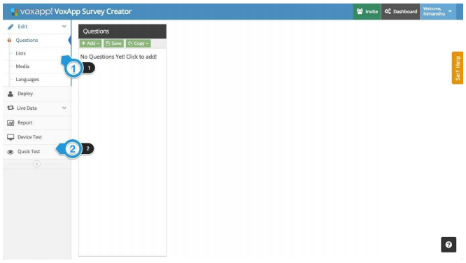1. SECTION SELECTOR
Every study/survey has four main sections: Questions, Lists, Media and Langauges
2. QUICK TEST
This section is used to test the survey while the scripting is in process or has been completed to check how it looks on the Web, Android, and Desktop applications. It’s also used to check the copy and logic of a survey from start to end
2.1. Questions¶
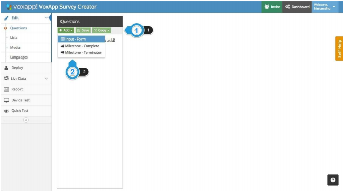This section consist of two sections:
1. Action Selector
This has three operations: Add, Save, and Copy
2. Input Form Selector
Clicking on the ‘Add’ button shows a dropdown list with few options which are as follows:
On adding a question/input-form, the added /active question is shown in a separate section on the page which is known as the ‘Question Editor Section’. Every single question consists of few components which are as follows:
1. Label & Title Labels are the unique identifiers of every single question added in the system. Ex: Q1, Q25a etc. Please note that the label assigned to a single question cannot be assigned to any other question. If it is assigned to any other question, it throws a warning Duplicate Label. All the logic of a questionnaire is written referring to Labels. There should not be any spaces in any question label:
2. Question Header and Help Text
3. Languages
This is the section where the translations for every question is added in a study. More detailed description of the same has been given in following sections.
4. Logic Section
This is where the javascript logic like Skipping, Branching, Piping is written for a question. It has two sections: When Question Loads and When Question Updates. For logic written in ‘When Question Loads’ section, the logic is evaluated and implemented before a question loads/shown on the application. For logic written in ‘When Question Updates’ section, the logic is evaluated and implemented after a question has loaded/shown on the application, and is evaluated on the basis of inputs given in that specific question.
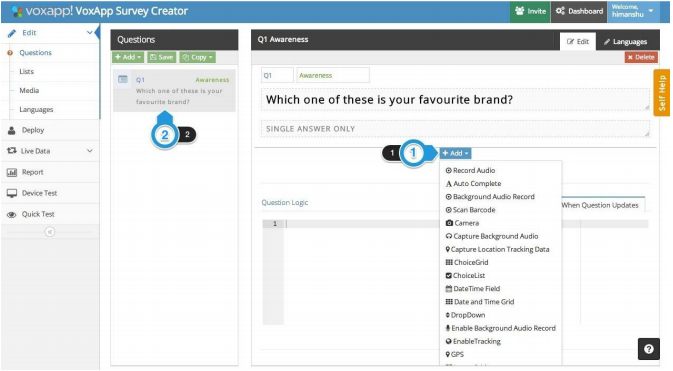Once a question is created, the next step is to assign a set of choices to that question, and define how those choices are to represented on the application.
1. Input Type Selector
This section is used to define what list of options are to be assigned to a question, and to define how they are to be represented on the application. When you click on the Add button in the Input Type Selector section, a dropdown gives you the available list of input-type choices.
2. Question Selector
Every question added is shown in the question list and can be selected from this section.
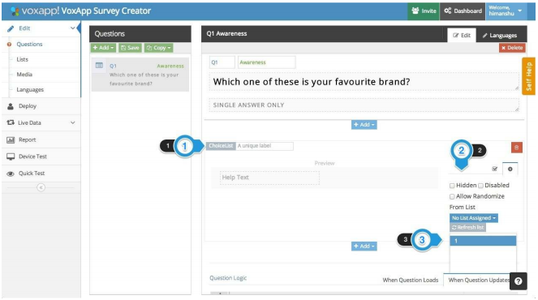When an input-type is added to a question, every input type has these components:
1. Input Type & Label
This is where the name of the input type is shown. Also, this is where the label of an input type is defined by the individual. ‘Labels’ are the unique identifiers of every single input type added in a survey.
2. Input-Type Actions
This section is used to define actions on an input-type. Actions are as follows:
3. List Selector
This is used to assign a list to an input-type. When clicked on this, it shows a dropdown with the list of all the available lists for that survey
1. List Preview
When a list is assigned to an input type, a preview of the same is shown on the input-type.
2. Validator
Every input-type also has a Validator section which is used to add basic validation in an input type. Ex: In a choice list input-type, you can define a number of ‘Minimum’ or/and ‘Maximum’ choice(s) that a respondent can select before they are allowed to move ahead in the survey.
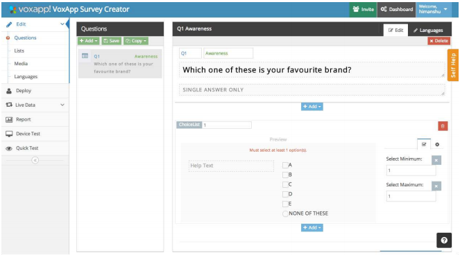The above image shows how validators are added in an input-type. Once the validators are also added, the question is deemed as complete, if there is no other javascript logic that is to be added in the survey.
2.2. Lists¶
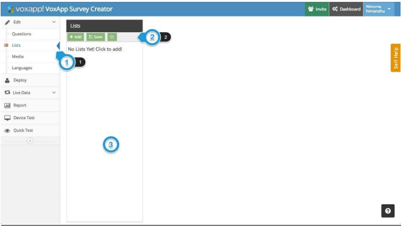Answer choices belonging to every question(s) are scripted and stored in this section.
1. Lists
Lists is listed as the second item on the Section Selector and can selected from there.
2. Action Selector
This has three operations: Add, Save, and Copy
3. List Queue
This is ‘List’ queues section where all the lists created are shown
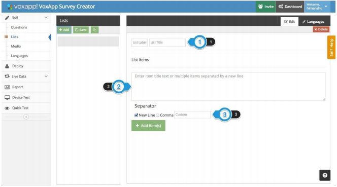On adding a list, the added /active list is shown in a separate section on the page which is known as the ‘List Editor Section’. Every single question consists of few components which are as follows:
1. Label & Title Labels are the unique identifiers of every single list added in the system. Ex: 1, 25a etc(No ‘Q’should be prefixed to the label of any list). Please note that the label assigned to a single list cannot be assigned to any other list. If it is assigned to any other list it throws a warning ‘Duplicate Label’. All the logic of a questionnaire is written referring to Labels. | There should not be any spaces in any list label:
| 25 a – Incorrect
| 25a – Correct
2. List Items
This is the section where list items are added(either pasted from a word document or typed in by an individual)
3. Separator
This is a separator section which is used to define a separator between two(or more than two) list elements. Elements of a list can be separated by a new line, comma, or any other custom separator of scriptor’s choice. It’s mandatory to define a separator before hitting the Add Item(s) button.
In this, ‘1’ is the label of the list, ‘BrandList’ is the title of the list, ‘A,B,C,D,E, None of these’ are the elements of the list, and ‘New Line’ is the separator defined for this list.
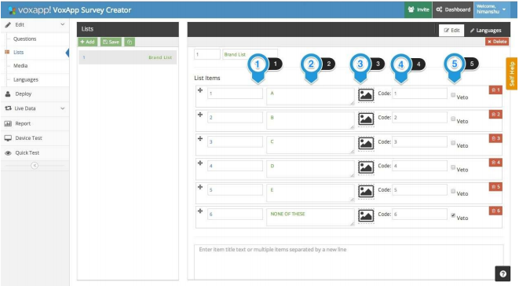When ‘Add Item(s)’ is clicked, the items of a list are split into separate entities as per the defined separator. Every item of a list has the following components:
1. List Item Label
This is unique identifier of a single item within a list. Please note that the label assigned to a single list item cannot be assigned to any other list item within a list. If it is assigned to any other list item within a list, it throws a warning ‘Duplicate Label’. All the logic of a questionnaire is written referring to Labels. | There should not be any spaces in any list label:
| 1 1 – Incorrect
| 1_1 – Correct
2. List Item Name
This is the name of the list items which is defined by the individual.
3. Image
This section is used to assign an image already present in the Media section of the survey(explained in the following sections) to a list item. Ex: In case of Brand Names, relevantbrand logo/image can be assigned to an item.
4. Code
These are the codes assigned to every item of a list which is used to represent that element in a CSV/report file.
5. Veto
This option is assigned to an element, which when selected, deselects every other option selected previously. Ex: If ‘None of These’ is marked as veto, and when this selected in a question, every other option of that list if selected previously, gets deselcted automatically.
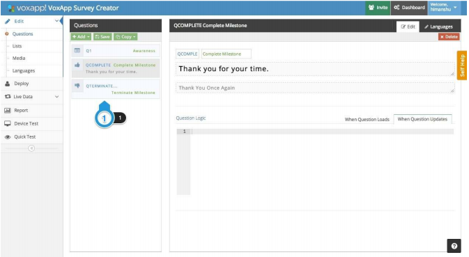- Once the process of scripting is complete, please add ‘Milestone – Complete’(mandatory) and ‘Milestone – Terminate’(if required).
2.3. Media¶
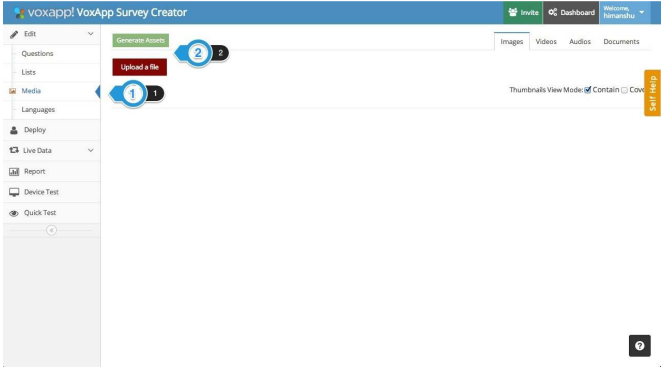This is the third item in the Section Selector. This section is used to add media like Images,Videos, Audio files etc to the survey. This has two components:
1. Upload a file
This is used to upload the media from a local machine to the cloud and the survey. There is no limit on the media being uploaded, but as per the cardinal rule, lesser the media, better the performance of a survey on various devices.
2. Generate Asset
Everytime a new media file is added in a survey, this button should be pressed to re-generate the assests in the survey bundle/package.
2.4. Languages¶
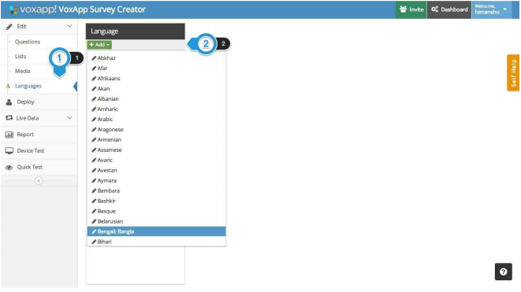1. Languages is the fouth item on the Section Selector.
2. This section has one component: ‘Add’. A required number of languages can be added to the survey from the supported list of languages. There is no need to add English as that is the default language in the survey creator.
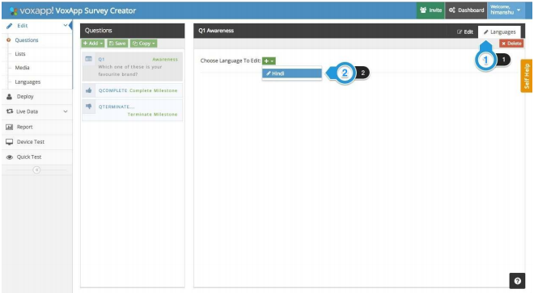Please note, this section does not translate the text automatically but is only used to integrate the required language font in the survey bundle.
Once the required number of languages are added, a user must go back to the ‘Questions’ and the ‘List’ section to add translations in the survey for every language.
For adding question translations, go the ‘Question’ section.(For adding list translations, go to the ‘List’ section and follow the same steps)
1. Language Section
Click on the ‘Languages’ tab at the top right corner.
2. Language Selector
In the ‘Choose Language to Edit’ dropdown, all the added list of languages are shown to the user. User can then select the langauge for which the translations are to be added.
Translations for only one language can be added at any given time. No parallel translations for multiple languages can be added in the survey.
Below is the example of how the translations are added for a single question in a survey
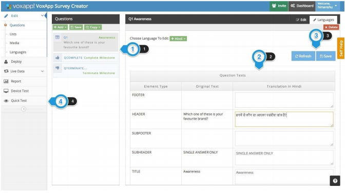On selecting the desired language for which the translations are to be added, the language section opens for the active question in the question list. It has the following components:
1. Question Selector
You can select the question for which the language has to be added from the question list.
2. Translation Box
This is the section where the translation are added for the active question. Original Text(English) is shown on the left and the relevant translation should be added in the textboxes on the right.
3. Action
Once the translations are added click on the language section ‘Save’ button(not on the survey Save button) to save the added translations. Clicking on Refresh button will refresh the page back to the last saved state.
After the translations have been added for all the questions and is Saved, click on the Quick Test button to test the survey in its current state on the browser.
2.5. Quick Test¶
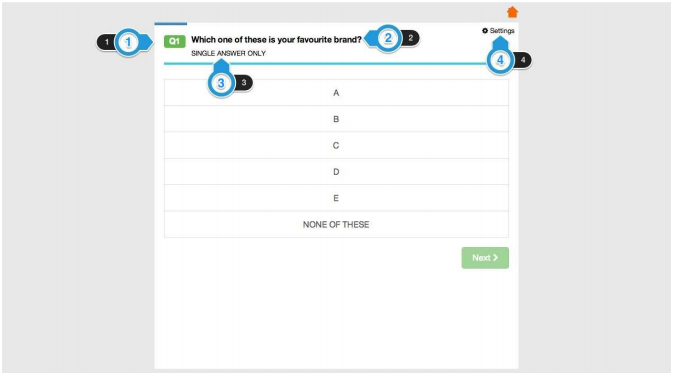On clicking the ‘Quick Test’ button, a new browser tab opens and loads the questionnaire in a web application. This is the exact representation of how the survey will look like on a Web, Mobile, and Desktop application.
- This is the question label, as entered in the question label section while scripting.
- This is the question header added in the header section on the survey creator tool.
- This is the question help text added in the help text section on the survey creator tool.
- Settings options is used to select the available langauges, and to change the font size of the question(not the answer choices).